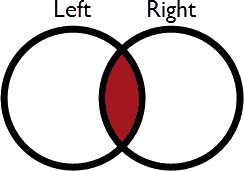
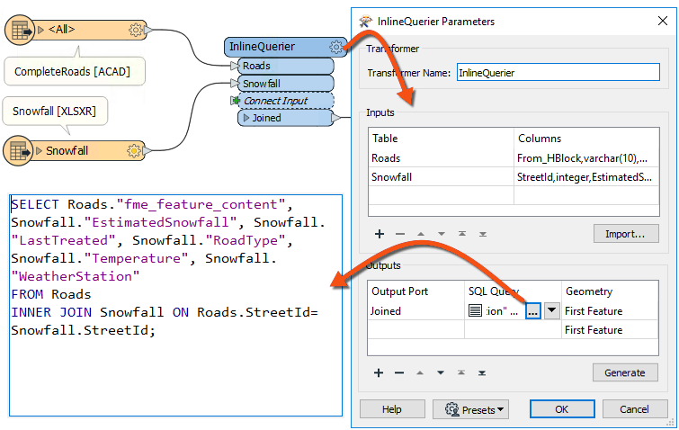

After completing this lesson, you’ll be able to:
Several transformers can join data by matching attribute values (keys). Some are more oriented towards geometry, while others have a more SQL-like style. Some join data streams within one workspace, while others join one data stream to an external database.
Which you use depends on your join requirements and performance needs.
The FeatureJoiner is a transformer for joining two data streams within a workspace based on a key field match. It is configured using SQL-style joins and can often be more performant than the FeatureMerger.
Here, for example, is the same Roads/Snowfall match in the FeatureJoiner. The parameters for the transformer look like this:

As you can see, this transformer is based more on traditional SQL queries. The Join Mode parameter can take one of three values:
| Mode | Description | Depiction | Joined Output | Unjoined Left | Unjoined Right |
|---|---|---|---|---|---|
| Left | Left features look for a match and are output whether they find a match or not |  |
All matches plus unmatched Left features | None | Unused Right features |
| Inner | Left features look for a match and are output if they find one |  | All matches only | Unmatched Left features | Unused Right features |
| Full | Both Left and Right features output through the Joined output port, whether they find a join or not |  |
All matches plus unmatched Left and Right features | None | None |
Other terms you might be familiar with are outer join and right join. An outer join is simply a different name for what the full join does here. To do a right join, you would switch which features are being sent to which input port and use the left join option.
The critical thing to be aware of here is that a feature is output for every match. For example, if one Road feature matches five Snowfall records, the FeatureJoiner will output five features to the Joined port.
Joined features are always output to the Joined port. Left, Inner, and Full only control which unmatched records are included in the Joined port.
With a left join, the user either believes that all roads will have a matching snowfall record, or it does not matter if there is not a match. No features will ever appear from the UnjoinedLeft output port.
If it was essential to ensure a match, the chosen mode should be inner. Then, records that exited the UnjoinedLeft output port could be treated as an error and investigated to determine why there was no match.
There are parameters to handle conflicts of information and whether to merge attributes only or geometry.
Another option for joining features is the FeatureMerger. The FeatureMerger handles joining data differently, in that by default it only creates a single match per source feature. In FME versions 2018-2021, it tended to be slower than the FeatureJoiner in most cases. However, updates in FME 2021.1 through FME 2023.0 have narrowed the gap. The FeatureJoiner still tends to be more performant on average, especially for larger data volumes.
To summarize:
The DatabaseJoiner transformer differs from the FeatureJoiner because instead of merging two streams of features, it merges one (or more) stream(s) of data with records from an external database.
Here is the same example as the FeatureMerger above. In this case, the roads features are obtaining snowfall data directly from a table in an Excel spreadsheet:

The parameters dialog for the DatabaseJoiner looks like this:

Again, StreetID is being used from both feature and database table to facilitate a merge between the two.
As with the other transformers, there are parameters to control the attributes that are accumulated and how conflicts are resolved.
The DatabaseJoiner has a number of advantages. Firstly, it has parameters to control how multiple matches are handled, as well as parameters for optimizing the database query.
Secondly, it allows features to be joined without having to read the entire dataset into a workspace. FME can query the database and select the individual records it needs. This can improve performance significantly.
It does, of course, require the supplier records to be stored in an appropriate database format!
You can "let the database do the work" and see performance improvements by using SQL* transformers. For example, see this article for an example of using the SQLExecutor to do the join with an SQL statement before reading features into FME. This method often results in faster workflows. The SQLCreator makes a single SQL query and returns the results as features. The SQLExecutor makes one SQL query per incoming feature, similar to the FeatureReader, allowing you to make multiple queries based on the value of incoming attributes.
If you want to write an SQL statement to join features you have already read into your workspace, you should use the InlineQuerier transformer. It accepts features from the workspace and generates a temporary database. With that database, it's possible to apply any SQL commands required – including joins – across several tables:

The InlineQuerier has the distinct advantage of allowing its input to be reused multiple times in a single transformer, whereas multiple joins would otherwise require multiple FeatureJoiner transformers. However, there is a performance overhead involved in generating that initial database.
⭐ New for FME 2023.0: the InlineQuerier is up to 12.9x faster and now supports spatial output queries.
⭐ New for FME 2023.0: look for the AI Assist button now available when editing SQL queries in FME.
With all of these transformer choices, it is hard to choose the right one for the job. Thankfully, there is a flowchart to help you decide; check out the Merging or Joining Spreadsheet or Database Data article.